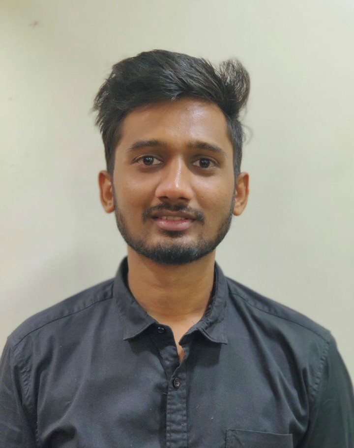

Yash Nikam

Summary
Motivated and dedicated Engineering graduate with a strong background in the Mechanical Sector, seeking to expand skillset and pursue a career in web development. Demonstrated commitment to hard work and a passion for learning, aiming to leverage technical expertise and adaptability to excel in the field of web development..
Education
- Krishna Engilish Medium School, Karad. 2015
- Ligade Patil Jr College of Science, Karad. 2017
- Sinhgad Academy of Engineering, Pune. 2021
Experience
- Malti founder Private Limited, Hatkalangde MIDC, Kolhapur.
Sept 2022-Till Date
Key Resposibilites-
- Organizing and overseeing the operation and maintenance of Machine shop and foundry process plant.
- Provided professional engineering support while monitoring important parameters at plant and suggested corrective measurements
- Inspected finished products for quality control, ensuring compliance with industry standards
- Also Supervising and improving production at Machine shop, reporting issues to the manager
- Collaborated with engineers and designers to provide feedback for product improvements.
- Analyzing problems or deficiencies and developing solutions to resolve them.
- Read and interpreted blueprints, ensuring adherence to specifications and tolerances
- Ross Process Equipment Private Limited, Pune.
January - September 2021
Key Resposibilites-
- Worked to supervise and improve the efficiency of the production with the help of Six sigma methodologies and quality Improvement techniques.
- Assisted the Production Manager to identify the various problems in production line.
- Provided technical support to maintain production capability and environment compliance in the manufacturing of mixers and blenders.
Skills
- Ansys19 ⭐️⭐️⭐️⭐️
- Catia V5 ⭐️⭐️⭐️
- Microsoft office(Word,Excel,PowerPoint) ⭐️⭐️⭐️⭐️
Certifications and Awards
- Stood third in cost preparation, BAJA SAE, National level competition in virtual EventIndiaApril 2021.
- Top Goal scorer in Football tournament, CESA, Sinhgad Academy of Engineering, Pune, September 2019.
- on the Lathe war during Techtonic, Sinhgad Academy of Engineering, Pune, January2019.
W
- Secured the first rank in Scrap machine during Techtonic, Sinhgad Academy of Engineering, Pune, February 2018
- Stood first in Football tournament, Armed Forces Medical College, Pune, February 2018.
- Secured second place in Football tournament, Vishwakarma Institute of Technology, Pune, February 2018